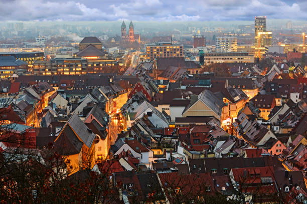

Itinerario del Día
El día comienza con la salida desde Colmar hacia Friburgo, una encantadora ciudad alemana conocida por su casco antiguo y su catedral. Después de explorar Friburgo, continuarás hacia Estrasburgo, una de las ciudades más emblemáticas de Alsacia. Finalmente, regresarás a Colmar para descansar.
Lugares para visitar cerca de Colmar
- Castillo de Haut-Koenigsbourg: Ubicado cerca de Colmar, este castillo medieval ofrece vistas espectaculares y una inmersión en la historia de la región. Es una parada ideal para comenzar el día.
- Riquewihr: Este pintoresco pueblo alsaciano, conocido por su arquitectura medieval y su ubicación en la Ruta del Vino, es perfecto para pasear y almorzar. Puedes disfrutar de su ambiente tranquilo y probar vinos locales.
- Kaysersberg: Elegido como "pueblo favorito de los franceses" en 2017, Kaysersberg destaca por su encanto medieval, casas de entramado de madera y paisajes impresionantes. Es una parada relajante para explorar antes de continuar hacia Offenburg.
Ruta y tiempo de viaje
La ruta circular incluye:
- Colmar a Friburgo: 45 km (~45 minutos).
- Friburgo a Estrasburgo: 85 km (~1 hora y 15 minutos).
- Estrasburgo a Colmar: 75 km (~1 hora).
- Distancia total: 205 km (~3 horas).
Itinerario en Friburgo
En Friburgo, puedes disfrutar de las siguientes actividades:
- Catedral de Friburgo: Una impresionante catedral gótica con una torre que ofrece vistas panorámicas de la ciudad.
- Casco Antiguo: Pasea por las calles adoquinadas y descubre los canales y las casas tradicionales.
- Plaza de la Catedral (Münsterplatz): Un lugar vibrante con mercados locales y cafeterías.
- Schwabentor: Una de las puertas medievales mejor conservadas de la ciudad.

Vista del casco antiguo de Friburgo y su catedral gótica.
Itinerario en Estrasburgo
Recomendaciones para Colmar
- Para aparcar fácilmente: Usa el Parking Lacarre (3 €/día con carga eléctrica).
- Aparcamiento gratuito: Calles en zona azul con disco, o parkings gratuitos como Montagne Verte o Ancienne Douane (unos 10 minutos caminando al centro).
- Compras rápidas: Marché Couvert o una épicerie local en el centro.
- Compras grandes: Para un desayuno largo o cena en el hotel, conduce al Leclerc o Cora.
Aquí tienes un itinerario sugerido para un día en Estrasburgo:
Mañana
- Catedral de Estrasburgo: Comienza el día visitando esta impresionante catedral gótica de arenisca rosa. No te pierdas el reloj astronómico y las vistas desde su plataforma superior.
- Grande Île: Explora este centro histórico, declarado Patrimonio de la Humanidad por la UNESCO. Puedes visitar el Palacio Rohan y disfrutar de un paseo por sus calles empedradas.

Catedral de Estrasburgo.
Tarde
- Petite France: Este encantador barrio es famoso por sus casas de entramado de madera y canales. Disfruta de un paseo relajado y admira la arquitectura típica alsaciana.
- Barrage Vauban: Sube al terrado para disfrutar de una vista panorámica de la ciudad.
- Ponts Couverts: Pasa por estos puentes cubiertos, una de las atracciones más icónicas de Estrasburgo.

Vista de Petite France en Estrasburgo, uno de los barrios más encantadores de la ciudad.
Mapa de la Ruta
Gastos
Gastos
En esta ruta, los gastos aproximados son los siguientes:
- Peajes: 5 € (estimado para la ruta)
- Gasolina: 22 € (215 km con un consumo de 7 l/100 km y precio de 1.40 €/l)
- Comida: 100 € (estimado para dos adultos y un niño)
- Alojamiento: 138 € (1/3 del total de 415 € por 3 noches)
- Total estimado: 265 €